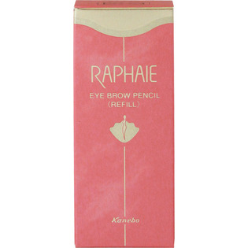
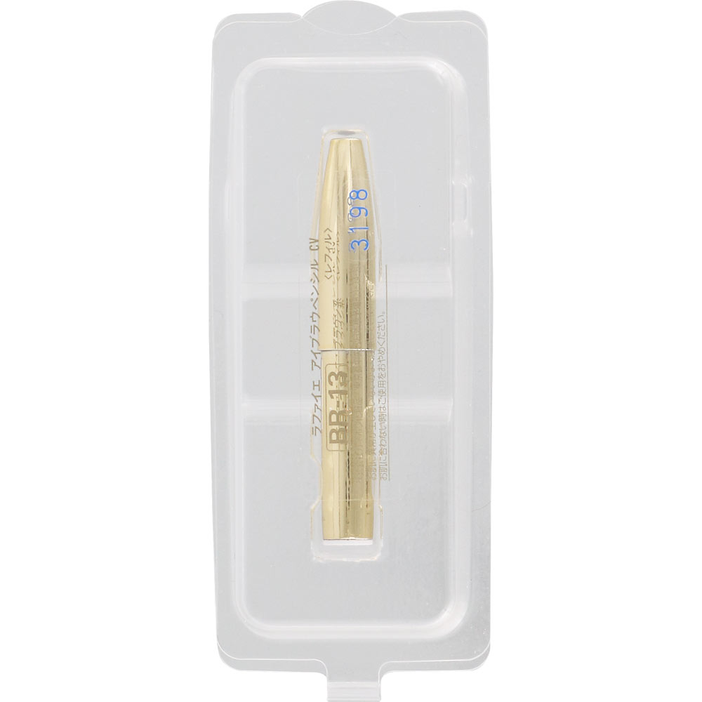

返回列表
产品名称：ラファイエ アイブラウペンシル CV レフィル

カネボウ化粧品 ラファイエ アイブラウペンシル CV レフィル ＢＲ－１３
メーカー カネボウ化粧品
JANコード 4973167420850
商品の特徴
なめらかな感触で、細いラインが簡単に描けるペンシルタイプのアイライナーです。
成分・分量
＜配合成分＞
トリステアリン・水添パーム油・マイクロクリスタリンワックス・ミツロウ・水添ヒマシ油・トリ（カプリル／カプリン酸）グリセリル・DNA-K・ヒアルロン酸ナトリウム、［＋／－］酸化鉄・酸化チタン・コンジョウ・マイカ・タルク
用法及び用量
専用のホルダーにセットして使う詰め替えタイプのアイブロウです。